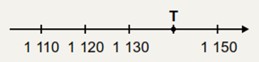
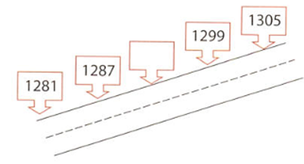
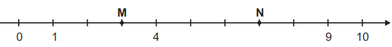
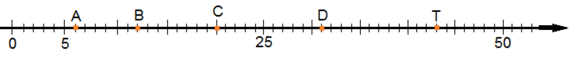
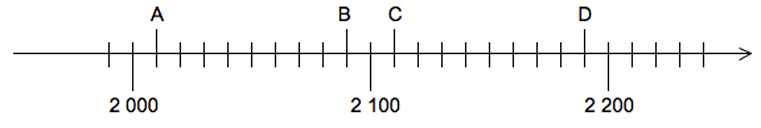
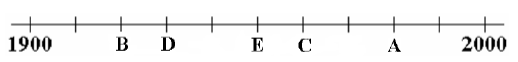
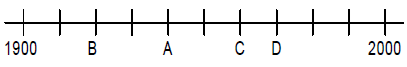
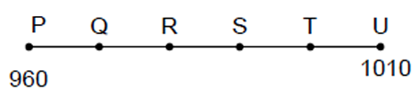
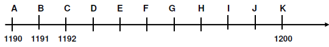

Observe a reta numérica abaixo. Essa reta está dividida em segmentos de mesma medida.

O número correspondente ao ponto T nessa reta é
Construíram uma estrada que liga as cidades de "Felicidades" e "Alegria". Existe um marco a cada 6 metros.

O valor do marco que está em branco é
Veja a seguinte sequência de números:
A alternativa que completa corretamente os valores que faltam da esquerda para a direita é:
Observe a reta numérica abaixo:

Quais são os números representados pelos pontos M e N nessa reta?
Observe com atenção a reta numérica abaixo.

As letras A, C e T correspondem nessa ordem aos números naturais
Na reta numérica abaixo, as letras indicam a localização de alguns números.

A letra que indica a localização do número 2 110 nessa reta numérica é
A professora Silma do 5º ano pediu a aluna Lídia que marcasse numa linha do tempo o ano de 1960.

Que ponto Lídia deve marcar para acertar a tarefa pedida?
Uma professora da 4ª série pediu que uma aluna marcasse numa linha do tempo o ano de 1940.

Que ponto a aluna deve marcar para acertar a tarefa pedida?
As paradas de ônibus de uma cidade são localizadas por números em uma reta numérica. A figura a seguir representa as paradas, o ponto P indica o número 960 e o ponto U o número 1010.

Em qual ponto está localizada a parada 990, sabendo que a diferença entre o valor de um ponto e o valor de outro ponto consecutivo é de 10 unidades?
Uma pista de corrida tem 1200 m. Ela é toda sinalizada. A cada metro existe uma marcação. Alice, Carlos, Luis e Mônica correm, diariamente. Uma revista resolveu fotografá-los. Carlos foi fotografado quando havia corrido 1.196 m.

A posição que Carlos ocupava no momento em que foi fotografado está representada pela letra